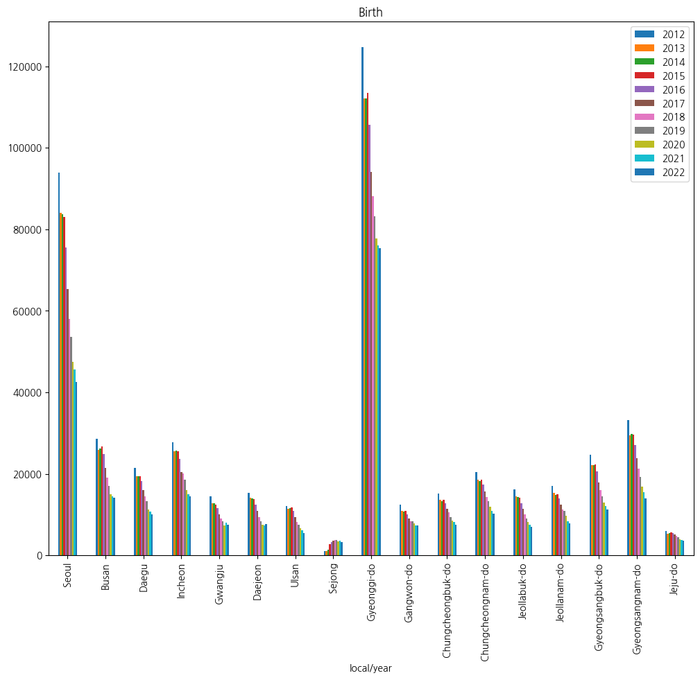

import pandas as pd
import numpy as np
import seaborn as sns
import matplotlib.pyplot as plt
import koreanize_matplotlib
import statsmodels.api as sm추천 시스템 스터디 실습 예제 2
trans2022 = pd.read_excel(
"data/raw-data.xlsx", "2022", index_col="in/out", na_values=["NA"]
)
population = pd.read_excel("data/raw-data.xlsx", "population", index_col="local/year")
birth = pd.read_excel("data/raw-data.xlsx", "birth", index_col="local/year")
death = pd.read_excel("data/raw-data.xlsx", "death", index_col="local/year")trans2022.head()| Seoul | Busan | Daegu | Incheon | Gwangju | Daejeon | Ulsan | Sejong | Gyeonggi\n-do | Gangwon\n-do | Chungcheong\nbuk-do | Chungcheong\nnam-do | Jeollabuk\n-do | Jeollanam\n-do | Gyeongsang\nbuk-do | Gyeongsang\nnam-do | Jeju-do | |
|---|---|---|---|---|---|---|---|---|---|---|---|---|---|---|---|---|---|
| in/out | |||||||||||||||||
| Seoul | 523992 | 10011 | 6782 | 32297 | 5448 | 8967 | 3171 | 3707 | 201762 | 15338 | 10069 | 14799 | 8855 | 8418 | 9687 | 9117 | 6942 |
| Busan | 17668 | 188193 | 4101 | 2284 | 895 | 1802 | 7250 | 629 | 13168 | 1573 | 1612 | 2306 | 1130 | 2533 | 7073 | 34238 | 1928 |
| Daegu | 12887 | 4413 | 118457 | 1654 | 469 | 1883 | 2296 | 642 | 10564 | 1329 | 1752 | 1971 | 723 | 817 | 32032 | 5922 | 1053 |
| Incheon | 27438 | 1702 | 1196 | 151238 | 1154 | 1927 | 651 | 678 | 43640 | 3954 | 3208 | 6182 | 2322 | 2353 | 2660 | 2104 | 1645 |
| Gwangju | 8958 | 910 | 459 | 1540 | 84311 | 1244 | 292 | 466 | 7504 | 631 | 819 | 1598 | 4151 | 23237 | 670 | 888 | 778 |
population.head()| 2012 | 2013 | 2014 | 2015 | 2016 | 2017 | 2018 | 2019 | 2020 | 2021 | 2022 | |
|---|---|---|---|---|---|---|---|---|---|---|---|
| local/year | |||||||||||
| Seoul | 10195318 | 10143645 | 10103233 | 10022181 | 9930616 | 9857426 | 9765623 | 9729107 | 9668465 | 9509458 | 9428372 |
| Busan | 3538484 | 3527635 | 3519401 | 3513777 | 3498529 | 3470653 | 3441453 | 3413841 | 3391946 | 3350380 | 3317812 |
| Daegu | 2505644 | 2501588 | 2493264 | 2487829 | 2484557 | 2475231 | 2461769 | 2438031 | 2418346 | 2385412 | 2363691 |
| Incheon | 2843981 | 2879782 | 2902608 | 2925815 | 2943069 | 2948542 | 2954642 | 2957026 | 2942828 | 2948375 | 2967314 |
| Gwangju | 1469216 | 1472910 | 1475884 | 1472199 | 1469214 | 1463770 | 1459336 | 1456468 | 1450062 | 1441611 | 1431050 |
birth.head()| 2012 | 2013 | 2014 | 2015 | 2016 | 2017 | 2018 | 2019 | 2020 | 2021 | 2022 | |
|---|---|---|---|---|---|---|---|---|---|---|---|
| local/year | |||||||||||
| Seoul | 93914 | 84066 | 83711 | 83005 | 75536 | 65389 | 58074 | 53673 | 47445 | 45531 | 42602 |
| Busan | 28673 | 25831 | 26190 | 26645 | 24906 | 21480 | 19152 | 17049 | 15058 | 14446 | 14134 |
| Daegu | 21472 | 19340 | 19361 | 19438 | 18298 | 15946 | 14400 | 13233 | 11193 | 10661 | 10134 |
| Incheon | 27781 | 25560 | 25786 | 25491 | 23609 | 20445 | 20087 | 18522 | 16040 | 14947 | 14464 |
| Gwangju | 14392 | 12729 | 12729 | 12441 | 11580 | 10120 | 9105 | 8364 | 7318 | 7956 | 7446 |
death.head()| 2012 | 2013 | 2014 | 2015 | 2016 | 2017 | 2018 | 2019 | 2020 | 2021 | 2022 | |
|---|---|---|---|---|---|---|---|---|---|---|---|
| local/year | |||||||||||
| Seoul | 41514 | 42063 | 42153 | 43053 | 43540 | 42932 | 45219 | 43829 | 45522 | 48798 | 55296 |
| Busan | 20534 | 20096 | 20230 | 20820 | 21074 | 21434 | 22570 | 22260 | 22950 | 23531 | 27713 |
| Daegu | 12352 | 12531 | 12642 | 13081 | 13502 | 13629 | 14070 | 13752 | 14460 | 14560 | 17592 |
| Incheon | 12881 | 13039 | 13409 | 13452 | 14119 | 14290 | 15316 | 15131 | 15689 | 16493 | 18957 |
| Gwangju | 6874 | 6891 | 6935 | 7443 | 7247 | 7560 | 7781 | 7635 | 7785 | 7981 | 9350 |
population2012 = population.iloc[:, 0]
population2013 = population.iloc[:, 1]
population2014 = population.iloc[:, 2]
population2015 = population.iloc[:, 3]
population2016 = population.iloc[:, 4]
population2017 = population.iloc[:, 5]
population2018 = population.iloc[:, 6]
population2019 = population.iloc[:, 7]
population2020 = population.iloc[:, 8]
population2021 = population.iloc[:, 9]
population2022 = population.iloc[:, 10]# for i in range(11):
# globals()[f"population{2012+i}"] = population.iloc[:, i]birth2012 = birth.iloc[:, 0]
birth2013 = birth.iloc[:, 1]
birth2014 = birth.iloc[:, 2]
birth2015 = birth.iloc[:, 3]
birth2016 = birth.iloc[:, 4]
birth2017 = birth.iloc[:, 5]
birth2018 = birth.iloc[:, 6]
birth2019 = birth.iloc[:, 7]
birth2020 = birth.iloc[:, 8]
birth2021 = birth.iloc[:, 9]
birth2022 = birth.iloc[:, 10]death2012 = death.iloc[:, 0]
death2013 = death.iloc[:, 1]
death2014 = death.iloc[:, 2]
death2015 = death.iloc[:, 3]
death2016 = death.iloc[:, 4]
death2017 = death.iloc[:, 5]
death2018 = death.iloc[:, 6]
death2019 = death.iloc[:, 7]
death2020 = death.iloc[:, 8]
death2021 = death.iloc[:, 9]
death2022 = death.iloc[:, 10]trans2012 = pd.read_excel(
"data/raw-data.xlsx", "2012", index_col="in/out", na_values=["NA"]
)
trans2013 = pd.read_excel(
"data/raw-data.xlsx", "2013", index_col="in/out", na_values=["NA"]
)
trans2014 = pd.read_excel(
"data/raw-data.xlsx", "2014", index_col="in/out", na_values=["NA"]
)
trans2015 = pd.read_excel(
"data/raw-data.xlsx", "2015", index_col="in/out", na_values=["NA"]
)
trans2016 = pd.read_excel(
"data/raw-data.xlsx", "2016", index_col="in/out", na_values=["NA"]
)
trans2017 = pd.read_excel(
"data/raw-data.xlsx", "2017", index_col="in/out", na_values=["NA"]
)
trans2018 = pd.read_excel(
"data/raw-data.xlsx", "2018", index_col="in/out", na_values=["NA"]
)
trans2019 = pd.read_excel(
"data/raw-data.xlsx", "2019", index_col="in/out", na_values=["NA"]
)
trans2020 = pd.read_excel(
"data/raw-data.xlsx", "2020", index_col="in/out", na_values=["NA"]
)
trans2021 = pd.read_excel(
"data/raw-data.xlsx", "2021", index_col="in/out", na_values=["NA"]
)
trans2022 = pd.read_excel(
"data/raw-data.xlsx", "2022", index_col="in/out", na_values=["NA"]
)분석
- 시도별 2012년 인구 이동, 시도별 인구, 시도별 출생, 시도별 사망에 대한 데이터를 로드한다. 일부 데이터를 시각화
- Pandas는 다양한 시각화 도구를 제공, 아주 세밀하거나 대화형 시각화는 일부 부족한 면이 있지만 데이터의 경향이나 분포를 파악하는데 부가 작업이 필요 없이 사용할 수 있다는 장점
birth.plot(kind="bar", figsize=(12, 10), title="Birth")
death.plot(kind="bar", figsize=(12, 10), title="Death")- 2012년 이후, 서울, 경기도, 경상남도 등에서 출생 명수가 줄어드는 것이 확연 => 시도별은?
population.plot(kind="bar", figsize=(12, 10), title="Population")- 2014년 서울 인구는 감소하고 인천 경기도 그리고 세종은 인구가 증가
- 이외 다른 시도는 큰 변경이 없음 => 서울에서 경기나 인천으로 이동했을 것으로 추정 => 증가분과 감소분이 차이가 있어 보임
- 2014년에서 2013년 인구의 차이를 구해보자.
population2014 - population2013local/year
Seoul -40412
Busan -8234
Daegu -8324
Incheon 22826
Gwangju 2974
Daejeon -1002
Ulsan 9897
Sejong 33972
Gyeonggi-do 123200
Gangwon-do 2179
Chungcheongbuk-do 6201
Chungcheongnam-do 14642
Jeollabuk-do -1405
Jeollanam-do -1392
Gyeongsangbuk-do 1354
Gyeongsangnam-do 16437
Jeju-do 13540
dtype: int64- 서울은 4만명이 줄어든 반면, 인천, 경기도는 각각 2만, 13만명이 늘었음
- 좀 더 다각적인 데이터를 확인하기 위해서 출생자 수에서 사망자 수를 합하면, 순수 증감수를 알 수 있음
birth - death| 2012 | 2013 | 2014 | 2015 | 2016 | 2017 | 2018 | 2019 | 2020 | 2021 | 2022 | |
|---|---|---|---|---|---|---|---|---|---|---|---|
| local/year | |||||||||||
| Seoul | 52400 | 42003 | 41558 | 39952 | 31996 | 22457 | 12855 | 9844 | 1923 | -3267 | -12694 |
| Busan | 8139 | 5735 | 5960 | 5825 | 3832 | 46 | -3418 | -5211 | -7892 | -9085 | -13579 |
| Daegu | 9120 | 6809 | 6719 | 6357 | 4796 | 2317 | 330 | -519 | -3267 | -3899 | -7458 |
| Incheon | 14900 | 12521 | 12377 | 12039 | 9490 | 6155 | 4771 | 3391 | 351 | -1546 | -4493 |
| Gwangju | 7518 | 5838 | 5794 | 4998 | 4333 | 2560 | 1324 | 729 | -467 | -25 | -1904 |
| Daejeon | 8699 | 7465 | 7398 | 6813 | 5478 | 3822 | 1934 | 908 | -91 | -475 | -1625 |
| Ulsan | 7593 | 6459 | 6861 | 6817 | 5963 | 4495 | 2800 | 2271 | 1315 | 634 | -970 |
| Sejong | 234 | 299 | 491 | 1729 | 2232 | 2345 | 2444 | 2598 | 2151 | 2216 | 1531 |
| Gyeonggi-do | 73916 | 61170 | 60744 | 60490 | 50428 | 37236 | 28125 | 22630 | 14943 | 8740 | -3687 |
| Gangwon-do | 1396 | 224 | -342 | -372 | -1379 | -2587 | -3625 | -3623 | -4347 | -5392 | -7808 |
| Chungcheongbuk-do | 4661 | 3287 | 3192 | 2925 | 1955 | 290 | -748 | -2030 | -2987 | -3751 | -6656 |
| Chungcheongnam-do | 6454 | 4774 | 4051 | 4135 | 2702 | 349 | -1422 | -2368 | -4072 | -5342 | -9498 |
| Jeollabuk-do | 2538 | 1063 | 668 | 366 | -1364 | -2947 | -4551 | -5554 | -6526 | -7574 | -10820 |
| Jeollanam-do | 224 | -931 | -1236 | -1482 | -2581 | -4494 | -5981 | -5955 | -7698 | -9138 | -12988 |
| Gyeongsangbuk-do | 3991 | 1961 | 1758 | 1448 | -362 | -3321 | -6210 | -7231 | -9926 | -10883 | -16529 |
| Gyeongsangnam-do | 12792 | 9510 | 9524 | 8224 | 5945 | 2215 | -1495 | -2855 | -6058 | -7830 | -13368 |
| Jeju-do | 2754 | 2011 | 2226 | 2261 | 1952 | 1299 | 869 | 541 | 37 | -501 | -1207 |
(birth - death).plot(kind="bar", figsize=(12, 10), title="Population")- 2014년 서울에서 출생, 사망으로 증가한 인구수는 4만명 증가했지만, 결과적으로 2013년보다 줄어듬
- 경기도는 출생, 사망으로 6만600명이 증가했기 때문에 외부에서 6만명이 추가적으로 유입
- 추가적으로 강원도는 300명 출생수보다 사망자수가 더 많아 인구가 줄어들 수 있는 지역임을 알 수 있음
- 전체 데이터를 시각적으로 확인하기 위해서 전체 인구로 각 시도 인구를 나누면 각 지역에 백분율 비율을 구할 수 있음
population2012_pie = population2012.astype(float) / population2012.sum() * 100
population2012_pie.plot(
kind="pie", autopct="%.2f", figsize=(8, 8), title="2012 Population"
)- 서울, 경기도, 인천의 합이 약 50%
- 같은 방법으로 2022년 시도별 인구 비율 구하면, 2012년과 2022년에서 가장 변화가 큰 시도를 구할 수 있음
population2022_pie = population2022.astype(float) / population2022.sum() * 100
population2022_pie.plot(
kind="pie", autopct="%.2f", figsize=(8, 8), title="2022 Population"
)- 인구 비율로, 서울은 가장 감소가 큰 지역이며, 경기도는 가장 증가가 큰 지역이다. 서울을 중심으로 한 지역 편중은 사라지지 않고 있으며, 서울을 중심으로 경기도 지역으로 인구 이동이 있다는 점을 유추할 수 있음
population2022_pie - population2012_pielocal/year
Seoul -1.681901
Busan -0.495260
Daegu -0.322885
Incheon 0.186508
Gwangju -0.101710
Daejeon -0.181179
Ulsan -0.092622
Sejong 0.523696
Gyeonggi-do 2.682093
Gangwon-do -0.032958
Chungcheongbuk-do 0.027895
Chungcheongnam-do 0.145255
Jeollabuk-do -0.236745
Jeollanam-do -0.214459
Gyeongsangbuk-do -0.240777
Gyeongsangnam-do -0.137628
Jeju-do 0.172677
dtype: float64예측
pd.set_option("display.precision", 2)
pd.set_option("display.float_format", lambda x: f"{x:,.2f}")- 회귀분석은 주어진 속성(입력 변수)와 목적 변수가 긴밀하게 관계돼 있을 때, 사용할 수 있는 방법으로 관찰된 현상과 그 현상에 영향을 미치는 변수들간의 통계 모델을 만들고, 모델로 새로운 입력 변수에 따른 목적 변수를 예측하는 분석법
- 회귀 분석으로 2023년, 2024년 인구를 예측
- 먼저, 회귀분석으로 예측하기 위해 statsmodels 라이브러리를 사용
- statsmodels 라이브러리는 일반최소제곱(Ordinary Least Squares) 기법을 제공
- 간단한 f를 정의
- t = 전체 : pop2022 - pop2021
- i = 서울로 들어 오는 인구 : trans2022
- o = 서울로 나가는 인구 : trans2022
- b = 서울에서 태어난 인구 : brith2022
- d = 서울에서 사망한 인구 : death2022
- t = 전체 : pop2022 - pop2021
s2022 = population2022["Seoul"]
s2021 = population2021["Seoul"]
print(s2022, s2021)
print(s2022 - s2021)9428372 9509458
-81086i = trans2022.loc["Seoul", :].sum()
o = trans2022.loc[:, "Seoul"].sum()
(i, o)
i - onp.int64(-8822)b = birth2022["Seoul"]
d = death2022["Seoul"]
(b, d)(np.int64(42602), np.int64(55296))(s2022 - s2021 + (i - o + b - d))np.int64(-102602)population.sum()2012 50948272
2013 51141463
2014 51327916
2015 51529338
2016 51696216
2017 51778544
2018 51826059
2019 51849861
2020 51829023
2021 51638809
2022 51439038
dtype: int64def predict(df, year):
X = np.array(range(2012, 2023))
X = sm.add_constant(X)
n, m = df.shape
l = []
for i in range(0, n):
y = df.iloc[i, :].values
est = sm.OLS(y, X).fit()
l.append(float(est.predict(np.array([1, year]))))
return pd.Series(l, index=df.index)population_predict = population.copy()
population_predict["2023"] = predict(population, 2023)
population_predict["2024"] = predict(population, 2024)
print(population_predict.sum())2012 50,948,272.00
2013 51,141,463.00
2014 51,327,916.00
2015 51,529,338.00
2016 51,696,216.00
2017 51,778,544.00
2018 51,826,059.00
2019 51,849,861.00
2020 51,829,023.00
2021 51,638,809.00
2022 51,439,038.00
2023 51,912,272.13
2024 51,973,339.62
dtype: float64C:\Users\sigma\AppData\Local\Temp\ipykernel_7820\2056355179.py:9: DeprecationWarning: Conversion of an array with ndim > 0 to a scalar is deprecated, and will error in future. Ensure you extract a single element from your array before performing this operation. (Deprecated NumPy 1.25.)
l.append(float(est.predict(np.array([1, year]))))
C:\Users\sigma\AppData\Local\Temp\ipykernel_7820\2056355179.py:9: DeprecationWarning: Conversion of an array with ndim > 0 to a scalar is deprecated, and will error in future. Ensure you extract a single element from your array before performing this operation. (Deprecated NumPy 1.25.)
l.append(float(est.predict(np.array([1, year]))))population_predict| 2012 | 2013 | 2014 | 2015 | 2016 | 2017 | 2018 | 2019 | 2020 | 2021 | 2022 | 2023 | 2024 | |
|---|---|---|---|---|---|---|---|---|---|---|---|---|---|
| local/year | |||||||||||||
| Seoul | 10195318 | 10143645 | 10103233 | 10022181 | 9930616 | 9857426 | 9765623 | 9729107 | 9668465 | 9509458 | 9428372 | 9,390,662.75 | 9,314,054.35 |
| Busan | 3538484 | 3527635 | 3519401 | 3513777 | 3498529 | 3470653 | 3441453 | 3413841 | 3391946 | 3350380 | 3317812 | 3,319,354.11 | 3,297,065.99 |
| Daegu | 2505644 | 2501588 | 2493264 | 2487829 | 2484557 | 2475231 | 2461769 | 2438031 | 2418346 | 2385412 | 2363691 | 2,372,945.25 | 2,359,112.46 |
| Incheon | 2843981 | 2879782 | 2902608 | 2925815 | 2943069 | 2948542 | 2954642 | 2957026 | 2942828 | 2948375 | 2967314 | 2,987,763.38 | 2,997,633.31 |
| Gwangju | 1469216 | 1472910 | 1475884 | 1472199 | 1469214 | 1463770 | 1459336 | 1456468 | 1450062 | 1441611 | 1431050 | 1,436,438.25 | 1,432,485.24 |
| Daejeon | 1524583 | 1532811 | 1531809 | 1518775 | 1514370 | 1502227 | 1489936 | 1474870 | 1463882 | 1452251 | 1446072 | 1,439,372.18 | 1,430,001.09 |
| Ulsan | 1147256 | 1156480 | 1166377 | 1173534 | 1172304 | 1165132 | 1155623 | 1148019 | 1136017 | 1121592 | 1110663 | 1,124,019.29 | 1,119,643.76 |
| Sejong | 113117 | 122153 | 156125 | 210884 | 243048 | 280100 | 314126 | 340575 | 355831 | 371895 | 383591 | 441,817.69 | 471,644.20 |
| Gyeonggi-do | 12093299 | 12234630 | 12357830 | 12522606 | 12716780 | 12873895 | 13077153 | 13239666 | 13427014 | 13565450 | 13589432 | 13,852,849.91 | 14,014,722.55 |
| Gangwon-do | 1538630 | 1542263 | 1544442 | 1549507 | 1550806 | 1550142 | 1543052 | 1541502 | 1542840 | 1538492 | 1536498 | 1,540,507.78 | 1,540,014.02 |
| Chungcheongbuk-do | 1565628 | 1572732 | 1578933 | 1583952 | 1591625 | 1594432 | 1599252 | 1600007 | 1600837 | 1597427 | 1595058 | 1,608,246.40 | 1,611,440.75 |
| Chungcheongnam-do | 2028777 | 2047631 | 2062273 | 2077649 | 2096727 | 2116770 | 2126282 | 2123709 | 2121029 | 2119257 | 2123037 | 2,152,417.20 | 2,162,014.90 |
| Jeollabuk-do | 1873341 | 1872965 | 1871560 | 1869711 | 1864791 | 1854607 | 1836832 | 1818917 | 1804104 | 1786855 | 1769607 | 1,773,297.73 | 1,762,433.86 |
| Jeollanam-do | 1909618 | 1907172 | 1905780 | 1908996 | 1903914 | 1896424 | 1882970 | 1868745 | 1851549 | 1832803 | 1817697 | 1,824,812.36 | 1,815,528.55 |
| Gyeongsangbuk-do | 2698353 | 2699440 | 2700794 | 2702826 | 2700398 | 2691706 | 2676831 | 2665836 | 2639422 | 2626609 | 2600492 | 2,615,030.16 | 2,605,372.96 |
| Gyeongsangnam-do | 3319314 | 3333820 | 3350257 | 3364702 | 3373871 | 3380404 | 3373988 | 3362553 | 3340216 | 3314183 | 3280493 | 3,328,147.89 | 3,325,357.37 |
| Jeju-do | 583713 | 593806 | 607346 | 624395 | 641597 | 657083 | 667191 | 670989 | 674635 | 676759 | 678159 | 704,589.78 | 714,814.25 |
population_predict.plot(kind="bar", figsize=(12, 10), title="Population 2023, 2024")birth_predict = birth.copy()
birth_predict["2023"] = predict(birth, 2023)
birth_predict["2024"] = predict(birth, 2024)
birth_predictC:\Users\sigma\AppData\Local\Temp\ipykernel_7820\2056355179.py:9: DeprecationWarning: Conversion of an array with ndim > 0 to a scalar is deprecated, and will error in future. Ensure you extract a single element from your array before performing this operation. (Deprecated NumPy 1.25.)
l.append(float(est.predict(np.array([1, year]))))
C:\Users\sigma\AppData\Local\Temp\ipykernel_7820\2056355179.py:9: DeprecationWarning: Conversion of an array with ndim > 0 to a scalar is deprecated, and will error in future. Ensure you extract a single element from your array before performing this operation. (Deprecated NumPy 1.25.)
l.append(float(est.predict(np.array([1, year]))))| 2012 | 2013 | 2014 | 2015 | 2016 | 2017 | 2018 | 2019 | 2020 | 2021 | 2022 | 2023 | 2024 | |
|---|---|---|---|---|---|---|---|---|---|---|---|---|---|
| local/year | |||||||||||||
| Seoul | 93914 | 84066 | 83711 | 83005 | 75536 | 65389 | 58074 | 53673 | 47445 | 45531 | 42602 | 34,142.87 | 28,728.11 |
| Busan | 28673 | 25831 | 26190 | 26645 | 24906 | 21480 | 19152 | 17049 | 15058 | 14446 | 14134 | 11,601.62 | 9,996.37 |
| Daegu | 21472 | 19340 | 19361 | 19438 | 18298 | 15946 | 14400 | 13233 | 11193 | 10661 | 10134 | 8,558.65 | 7,356.67 |
| Incheon | 27781 | 25560 | 25786 | 25491 | 23609 | 20445 | 20087 | 18522 | 16040 | 14947 | 14464 | 12,662.82 | 11,247.05 |
| Gwangju | 14392 | 12729 | 12729 | 12441 | 11580 | 10120 | 9105 | 8364 | 7318 | 7956 | 7446 | 5,979.05 | 5,245.56 |
| Daejeon | 15279 | 14099 | 13962 | 13774 | 12436 | 10851 | 9337 | 8410 | 7481 | 7414 | 7677 | 5,628.00 | 4,736.91 |
| Ulsan | 12160 | 11330 | 11556 | 11732 | 10910 | 9381 | 8149 | 7539 | 6617 | 6127 | 5399 | 4,777.40 | 4,044.85 |
| Sejong | 1054 | 1111 | 1344 | 2708 | 3297 | 3504 | 3703 | 3819 | 3468 | 3570 | 3209 | 4,413.96 | 4,683.15 |
| Gyeonggi-do | 124746 | 112129 | 112169 | 113495 | 105643 | 94088 | 88175 | 83198 | 77737 | 76139 | 75323 | 65,398.38 | 60,194.45 |
| Gangwon-do | 12426 | 10980 | 10662 | 10929 | 10058 | 8958 | 8351 | 8283 | 7835 | 7357 | 7278 | 6,335.44 | 5,828.96 |
| Chungcheongbuk-do | 15139 | 13658 | 13366 | 13563 | 12742 | 11394 | 10586 | 9333 | 8607 | 8190 | 7452 | 6,628.18 | 5,853.64 |
| Chungcheongnam-do | 20448 | 18628 | 18200 | 18604 | 17302 | 15670 | 14380 | 13228 | 11950 | 10984 | 10221 | 9,194.00 | 8,156.41 |
| Jeollabuk-do | 16238 | 14555 | 14231 | 14087 | 12698 | 11348 | 10001 | 8971 | 8165 | 7475 | 7032 | 5,592.25 | 4,633.37 |
| Jeollanam-do | 16990 | 15401 | 14817 | 15061 | 13980 | 12354 | 11238 | 10832 | 9738 | 8430 | 7888 | 6,984.58 | 6,077.03 |
| Gyeongsangbuk-do | 24635 | 22206 | 22062 | 22310 | 20616 | 17957 | 16079 | 14472 | 12873 | 12045 | 11311 | 9,412.69 | 8,003.20 |
| Gyeongsangnam-do | 33211 | 29504 | 29763 | 29537 | 27138 | 23849 | 21224 | 19250 | 16823 | 15562 | 14017 | 11,786.40 | 9,813.25 |
| Jeju-do | 5992 | 5328 | 5526 | 5600 | 5494 | 5037 | 4781 | 4500 | 3989 | 3728 | 3599 | 3,458.24 | 3,222.88 |
print(birth_predict.sum())
birth_predict.plot(kind="bar", figsize=(12, 10), title="birth 2023, 2024")2012 484,550.00
2013 436,455.00
2014 435,435.00
2015 438,420.00
2016 406,243.00
2017 357,771.00
2018 326,822.00
2019 302,676.00
2020 272,337.00
2021 260,562.00
2022 249,186.00
2023 212,554.55
2024 187,821.86
dtype: float642022년 총 출생자 수는 249,186명으로, 2012년 20만 명이상 감소
2024년은 2022년 기준으로 약 6만명 감소
시도별 인구 이동을 기반으로 시도별 인구 분포를 예측
- 마코프 체인을 활용
- 마코프 체인은 단위 시간에 따른 상태 변화를 나타내는데, 매 단위 시간마다 상태가 변이되거나 유지되며, 상태 변이를 전이라 함
- 전이는 상태전이확률(state transition probability) 행렬로 나타내며, 이를 바탕으로 변화를 예측
- 현재 상태에서 다음 상태로 전이될 때 이 상태전이확률로 확률적으로 전이
- 2014년 각 시도의 이동 인구는 상태전이확률로 나타낼 수 있다. 즉, 2014년 서울에서 이동하여 다른 시도로 이동할 확률은 서울에서 떠난 전인구로 각 시도로 이동한 인구를 나누면, 상태전이확률을 구할 수 있음
- 각 시도도 마찬가지로 시도에서 전출한 총인구를 각 다른 시도로 전입한 인구를 나누면 됨
trans2022_percent = trans2022.copy()
for i in range(0, 17):
trans2022_percent.iloc[:, i] = (
trans2022.iloc[:, i].astype(float) / trans2022.iloc[:, i].sum()
)
trans2022_percentC:\Users\sigma\AppData\Local\Temp\ipykernel_7820\4015714302.py:3: FutureWarning: Setting an item of incompatible dtype is deprecated and will raise in a future error of pandas. Value 'in/out
Seoul 0.59
Busan 0.02
Daegu 0.01
Incheon 0.03
Gwangju 0.01
Daejeon 0.01
Ulsan 0.01
Sejong 0.00
Gyeonggi-do 0.20
Gangwon-do 0.02
Chungcheongbuk-do 0.01
Chungcheongnam-do 0.02
Jeollabuk-do 0.01
Jeollanam-do 0.01
Gyeongsangbuk-do 0.02
Gyeongsangnam-do 0.02
Jeju-do 0.01
Name: Seoul, dtype: float64' has dtype incompatible with int64, please explicitly cast to a compatible dtype first.
trans2022_percent.iloc[:, i] = (
C:\Users\sigma\AppData\Local\Temp\ipykernel_7820\4015714302.py:3: FutureWarning: Setting an item of incompatible dtype is deprecated and will raise in a future error of pandas. Value 'in/out
Seoul 0.04
Busan 0.68
Daegu 0.02
Incheon 0.01
Gwangju 0.00
Daejeon 0.01
Ulsan 0.03
Sejong 0.00
Gyeonggi-do 0.03
Gangwon-do 0.00
Chungcheongbuk-do 0.00
Chungcheongnam-do 0.01
Jeollabuk-do 0.00
Jeollanam-do 0.01
Gyeongsangbuk-do 0.03
Gyeongsangnam-do 0.13
Jeju-do 0.01
Name: Busan, dtype: float64' has dtype incompatible with int64, please explicitly cast to a compatible dtype first.
trans2022_percent.iloc[:, i] = (
C:\Users\sigma\AppData\Local\Temp\ipykernel_7820\4015714302.py:3: FutureWarning: Setting an item of incompatible dtype is deprecated and will raise in a future error of pandas. Value 'in/out
Seoul 0.04
Busan 0.02
Daegu 0.64
Incheon 0.01
Gwangju 0.00
Daejeon 0.01
Ulsan 0.01
Sejong 0.00
Gyeonggi-do 0.04
Gangwon-do 0.01
Chungcheongbuk-do 0.01
Chungcheongnam-do 0.01
Jeollabuk-do 0.00
Jeollanam-do 0.00
Gyeongsangbuk-do 0.16
Gyeongsangnam-do 0.04
Jeju-do 0.00
Name: Daegu, dtype: float64' has dtype incompatible with int64, please explicitly cast to a compatible dtype first.
trans2022_percent.iloc[:, i] = (
C:\Users\sigma\AppData\Local\Temp\ipykernel_7820\4015714302.py:3: FutureWarning: Setting an item of incompatible dtype is deprecated and will raise in a future error of pandas. Value 'in/out
Seoul 0.12
Busan 0.01
Daegu 0.01
Incheon 0.57
Gwangju 0.01
Daejeon 0.01
Ulsan 0.00
Sejong 0.00
Gyeonggi-do 0.19
Gangwon-do 0.01
Chungcheongbuk-do 0.01
Chungcheongnam-do 0.02
Jeollabuk-do 0.01
Jeollanam-do 0.01
Gyeongsangbuk-do 0.01
Gyeongsangnam-do 0.01
Jeju-do 0.01
Name: Incheon, dtype: float64' has dtype incompatible with int64, please explicitly cast to a compatible dtype first.
trans2022_percent.iloc[:, i] = (
C:\Users\sigma\AppData\Local\Temp\ipykernel_7820\4015714302.py:3: FutureWarning: Setting an item of incompatible dtype is deprecated and will raise in a future error of pandas. Value 'in/out
Seoul 0.04
Busan 0.01
Daegu 0.00
Incheon 0.01
Gwangju 0.64
Daejeon 0.01
Ulsan 0.00
Sejong 0.00
Gyeonggi-do 0.04
Gangwon-do 0.00
Chungcheongbuk-do 0.00
Chungcheongnam-do 0.01
Jeollabuk-do 0.03
Jeollanam-do 0.18
Gyeongsangbuk-do 0.00
Gyeongsangnam-do 0.01
Jeju-do 0.01
Name: Gwangju, dtype: float64' has dtype incompatible with int64, please explicitly cast to a compatible dtype first.
trans2022_percent.iloc[:, i] = (
C:\Users\sigma\AppData\Local\Temp\ipykernel_7820\4015714302.py:3: FutureWarning: Setting an item of incompatible dtype is deprecated and will raise in a future error of pandas. Value 'in/out
Seoul 0.06
Busan 0.01
Daegu 0.01
Incheon 0.01
Gwangju 0.01
Daejeon 0.57
Ulsan 0.00
Sejong 0.03
Gyeonggi-do 0.07
Gangwon-do 0.01
Chungcheongbuk-do 0.05
Chungcheongnam-do 0.08
Jeollabuk-do 0.03
Jeollanam-do 0.01
Gyeongsangbuk-do 0.02
Gyeongsangnam-do 0.02
Jeju-do 0.00
Name: Daejeon, dtype: float64' has dtype incompatible with int64, please explicitly cast to a compatible dtype first.
trans2022_percent.iloc[:, i] = (
C:\Users\sigma\AppData\Local\Temp\ipykernel_7820\4015714302.py:3: FutureWarning: Setting an item of incompatible dtype is deprecated and will raise in a future error of pandas. Value 'in/out
Seoul 0.04
Busan 0.09
Daegu 0.03
Incheon 0.01
Gwangju 0.00
Daejeon 0.01
Ulsan 0.60
Sejong 0.00
Gyeonggi-do 0.04
Gangwon-do 0.01
Chungcheongbuk-do 0.01
Chungcheongnam-do 0.01
Jeollabuk-do 0.01
Jeollanam-do 0.01
Gyeongsangbuk-do 0.07
Gyeongsangnam-do 0.07
Jeju-do 0.01
Name: Ulsan, dtype: float64' has dtype incompatible with int64, please explicitly cast to a compatible dtype first.
trans2022_percent.iloc[:, i] = (
C:\Users\sigma\AppData\Local\Temp\ipykernel_7820\4015714302.py:3: FutureWarning: Setting an item of incompatible dtype is deprecated and will raise in a future error of pandas. Value 'in/out
Seoul 0.09
Busan 0.02
Daegu 0.02
Incheon 0.02
Gwangju 0.01
Daejeon 0.16
Ulsan 0.01
Sejong 0.33
Gyeonggi-do 0.10
Gangwon-do 0.01
Chungcheongbuk-do 0.08
Chungcheongnam-do 0.09
Jeollabuk-do 0.02
Jeollanam-do 0.01
Gyeongsangbuk-do 0.02
Gyeongsangnam-do 0.02
Jeju-do 0.01
Name: Sejong, dtype: float64' has dtype incompatible with int64, please explicitly cast to a compatible dtype first.
trans2022_percent.iloc[:, i] = (
C:\Users\sigma\AppData\Local\Temp\ipykernel_7820\4015714302.py:3: FutureWarning: Setting an item of incompatible dtype is deprecated and will raise in a future error of pandas. Value 'in/out
Seoul 0.18
Busan 0.01
Daegu 0.01
Incheon 0.04
Gwangju 0.01
Daejeon 0.01
Ulsan 0.00
Sejong 0.00
Gyeonggi-do 0.63
Gangwon-do 0.02
Chungcheongbuk-do 0.01
Chungcheongnam-do 0.02
Jeollabuk-do 0.01
Jeollanam-do 0.01
Gyeongsangbuk-do 0.01
Gyeongsangnam-do 0.01
Jeju-do 0.01
Name: Gyeonggi\n-do, dtype: float64' has dtype incompatible with int64, please explicitly cast to a compatible dtype first.
trans2022_percent.iloc[:, i] = (
C:\Users\sigma\AppData\Local\Temp\ipykernel_7820\4015714302.py:3: FutureWarning: Setting an item of incompatible dtype is deprecated and will raise in a future error of pandas. Value 'in/out
Seoul 0.11
Busan 0.01
Daegu 0.01
Incheon 0.03
Gwangju 0.00
Daejeon 0.01
Ulsan 0.00
Sejong 0.00
Gyeonggi-do 0.16
Gangwon-do 0.57
Chungcheongbuk-do 0.02
Chungcheongnam-do 0.02
Jeollabuk-do 0.01
Jeollanam-do 0.01
Gyeongsangbuk-do 0.02
Gyeongsangnam-do 0.01
Jeju-do 0.00
Name: Gangwon\n-do, dtype: float64' has dtype incompatible with int64, please explicitly cast to a compatible dtype first.
trans2022_percent.iloc[:, i] = (
C:\Users\sigma\AppData\Local\Temp\ipykernel_7820\4015714302.py:3: FutureWarning: Setting an item of incompatible dtype is deprecated and will raise in a future error of pandas. Value 'in/out
Seoul 0.07
Busan 0.01
Daegu 0.01
Incheon 0.02
Gwangju 0.01
Daejeon 0.05
Ulsan 0.01
Sejong 0.02
Gyeonggi-do 0.13
Gangwon-do 0.02
Chungcheongbuk-do 0.55
Chungcheongnam-do 0.04
Jeollabuk-do 0.01
Jeollanam-do 0.01
Gyeongsangbuk-do 0.03
Gyeongsangnam-do 0.02
Jeju-do 0.00
Name: Chungcheong\nbuk-do, dtype: float64' has dtype incompatible with int64, please explicitly cast to a compatible dtype first.
trans2022_percent.iloc[:, i] = (
C:\Users\sigma\AppData\Local\Temp\ipykernel_7820\4015714302.py:3: FutureWarning: Setting an item of incompatible dtype is deprecated and will raise in a future error of pandas. Value 'in/out
Seoul 0.08
Busan 0.01
Daegu 0.01
Incheon 0.03
Gwangju 0.01
Daejeon 0.06
Ulsan 0.01
Sejong 0.02
Gyeonggi-do 0.16
Gangwon-do 0.01
Chungcheongbuk-do 0.03
Chungcheongnam-do 0.50
Jeollabuk-do 0.02
Jeollanam-do 0.01
Gyeongsangbuk-do 0.02
Gyeongsangnam-do 0.02
Jeju-do 0.00
Name: Chungcheong\nnam-do, dtype: float64' has dtype incompatible with int64, please explicitly cast to a compatible dtype first.
trans2022_percent.iloc[:, i] = (
C:\Users\sigma\AppData\Local\Temp\ipykernel_7820\4015714302.py:3: FutureWarning: Setting an item of incompatible dtype is deprecated and will raise in a future error of pandas. Value 'in/out
Seoul 0.06
Busan 0.01
Daegu 0.00
Incheon 0.02
Gwangju 0.03
Daejeon 0.02
Ulsan 0.00
Sejong 0.01
Gyeonggi-do 0.08
Gangwon-do 0.01
Chungcheongbuk-do 0.01
Chungcheongnam-do 0.03
Jeollabuk-do 0.68
Jeollanam-do 0.03
Gyeongsangbuk-do 0.01
Gyeongsangnam-do 0.01
Jeju-do 0.00
Name: Jeollabuk\n-do, dtype: float64' has dtype incompatible with int64, please explicitly cast to a compatible dtype first.
trans2022_percent.iloc[:, i] = (
C:\Users\sigma\AppData\Local\Temp\ipykernel_7820\4015714302.py:3: FutureWarning: Setting an item of incompatible dtype is deprecated and will raise in a future error of pandas. Value 'in/out
Seoul 0.06
Busan 0.02
Daegu 0.01
Incheon 0.02
Gwangju 0.16
Daejeon 0.01
Ulsan 0.00
Sejong 0.00
Gyeonggi-do 0.07
Gangwon-do 0.01
Chungcheongbuk-do 0.01
Chungcheongnam-do 0.01
Jeollabuk-do 0.03
Jeollanam-do 0.56
Gyeongsangbuk-do 0.01
Gyeongsangnam-do 0.02
Jeju-do 0.01
Name: Jeollanam\n-do, dtype: float64' has dtype incompatible with int64, please explicitly cast to a compatible dtype first.
trans2022_percent.iloc[:, i] = (
C:\Users\sigma\AppData\Local\Temp\ipykernel_7820\4015714302.py:3: FutureWarning: Setting an item of incompatible dtype is deprecated and will raise in a future error of pandas. Value 'in/out
Seoul 0.05
Busan 0.03
Daegu 0.16
Incheon 0.01
Gwangju 0.00
Daejeon 0.01
Ulsan 0.03
Sejong 0.00
Gyeonggi-do 0.07
Gangwon-do 0.01
Chungcheongbuk-do 0.01
Chungcheongnam-do 0.01
Jeollabuk-do 0.01
Jeollanam-do 0.01
Gyeongsangbuk-do 0.54
Gyeongsangnam-do 0.04
Jeju-do 0.00
Name: Gyeongsang\nbuk-do, dtype: float64' has dtype incompatible with int64, please explicitly cast to a compatible dtype first.
trans2022_percent.iloc[:, i] = (
C:\Users\sigma\AppData\Local\Temp\ipykernel_7820\4015714302.py:3: FutureWarning: Setting an item of incompatible dtype is deprecated and will raise in a future error of pandas. Value 'in/out
Seoul 0.04
Busan 0.14
Daegu 0.02
Incheon 0.01
Gwangju 0.00
Daejeon 0.01
Ulsan 0.02
Sejong 0.00
Gyeonggi-do 0.04
Gangwon-do 0.01
Chungcheongbuk-do 0.01
Chungcheongnam-do 0.01
Jeollabuk-do 0.01
Jeollanam-do 0.01
Gyeongsangbuk-do 0.03
Gyeongsangnam-do 0.63
Jeju-do 0.01
Name: Gyeongsang\nnam-do, dtype: float64' has dtype incompatible with int64, please explicitly cast to a compatible dtype first.
trans2022_percent.iloc[:, i] = (
C:\Users\sigma\AppData\Local\Temp\ipykernel_7820\4015714302.py:3: FutureWarning: Setting an item of incompatible dtype is deprecated and will raise in a future error of pandas. Value 'in/out
Seoul 0.11
Busan 0.03
Daegu 0.02
Incheon 0.03
Gwangju 0.01
Daejeon 0.01
Ulsan 0.01
Sejong 0.00
Gyeonggi-do 0.12
Gangwon-do 0.01
Chungcheongbuk-do 0.01
Chungcheongnam-do 0.01
Jeollabuk-do 0.01
Jeollanam-do 0.01
Gyeongsangbuk-do 0.02
Gyeongsangnam-do 0.02
Jeju-do 0.57
Name: Jeju-do, dtype: float64' has dtype incompatible with int64, please explicitly cast to a compatible dtype first.
trans2022_percent.iloc[:, i] = (| Seoul | Busan | Daegu | Incheon | Gwangju | Daejeon | Ulsan | Sejong | Gyeonggi\n-do | Gangwon\n-do | Chungcheong\nbuk-do | Chungcheong\nnam-do | Jeollabuk\n-do | Jeollanam\n-do | Gyeongsang\nbuk-do | Gyeongsang\nnam-do | Jeju-do | |
|---|---|---|---|---|---|---|---|---|---|---|---|---|---|---|---|---|---|
| in/out | |||||||||||||||||
| Seoul | 0.59 | 0.04 | 0.04 | 0.12 | 0.04 | 0.06 | 0.04 | 0.09 | 0.18 | 0.11 | 0.07 | 0.08 | 0.06 | 0.06 | 0.05 | 0.04 | 0.11 |
| Busan | 0.02 | 0.68 | 0.02 | 0.01 | 0.01 | 0.01 | 0.09 | 0.02 | 0.01 | 0.01 | 0.01 | 0.01 | 0.01 | 0.02 | 0.03 | 0.14 | 0.03 |
| Daegu | 0.01 | 0.02 | 0.64 | 0.01 | 0.00 | 0.01 | 0.03 | 0.02 | 0.01 | 0.01 | 0.01 | 0.01 | 0.00 | 0.01 | 0.16 | 0.02 | 0.02 |
| Incheon | 0.03 | 0.01 | 0.01 | 0.57 | 0.01 | 0.01 | 0.01 | 0.02 | 0.04 | 0.03 | 0.02 | 0.03 | 0.02 | 0.02 | 0.01 | 0.01 | 0.03 |
| Gwangju | 0.01 | 0.00 | 0.00 | 0.01 | 0.64 | 0.01 | 0.00 | 0.01 | 0.01 | 0.00 | 0.01 | 0.01 | 0.03 | 0.16 | 0.00 | 0.00 | 0.01 |
| Daejeon | 0.01 | 0.01 | 0.01 | 0.01 | 0.01 | 0.57 | 0.01 | 0.16 | 0.01 | 0.01 | 0.05 | 0.06 | 0.02 | 0.01 | 0.01 | 0.01 | 0.01 |
| Ulsan | 0.01 | 0.03 | 0.01 | 0.00 | 0.00 | 0.00 | 0.60 | 0.01 | 0.00 | 0.00 | 0.01 | 0.01 | 0.00 | 0.00 | 0.03 | 0.02 | 0.01 |
| Sejong | 0.00 | 0.00 | 0.00 | 0.00 | 0.00 | 0.03 | 0.00 | 0.33 | 0.00 | 0.00 | 0.02 | 0.02 | 0.01 | 0.00 | 0.00 | 0.00 | 0.00 |
| Gyeonggi-do | 0.20 | 0.03 | 0.04 | 0.19 | 0.04 | 0.07 | 0.04 | 0.10 | 0.63 | 0.16 | 0.13 | 0.16 | 0.08 | 0.07 | 0.07 | 0.04 | 0.12 |
| Gangwon-do | 0.02 | 0.00 | 0.01 | 0.01 | 0.00 | 0.01 | 0.01 | 0.01 | 0.02 | 0.57 | 0.02 | 0.01 | 0.01 | 0.01 | 0.01 | 0.01 | 0.01 |
| Chungcheongbuk-do | 0.01 | 0.00 | 0.01 | 0.01 | 0.00 | 0.05 | 0.01 | 0.08 | 0.01 | 0.02 | 0.55 | 0.03 | 0.01 | 0.01 | 0.01 | 0.01 | 0.01 |
| Chungcheongnam-do | 0.02 | 0.01 | 0.01 | 0.02 | 0.01 | 0.08 | 0.01 | 0.09 | 0.02 | 0.02 | 0.04 | 0.50 | 0.03 | 0.01 | 0.01 | 0.01 | 0.01 |
| Jeollabuk-do | 0.01 | 0.00 | 0.00 | 0.01 | 0.03 | 0.03 | 0.01 | 0.02 | 0.01 | 0.01 | 0.01 | 0.02 | 0.68 | 0.03 | 0.01 | 0.01 | 0.01 |
| Jeollanam-do | 0.01 | 0.01 | 0.00 | 0.01 | 0.18 | 0.01 | 0.01 | 0.01 | 0.01 | 0.01 | 0.01 | 0.01 | 0.03 | 0.56 | 0.01 | 0.01 | 0.01 |
| Gyeongsangbuk-do | 0.02 | 0.03 | 0.16 | 0.01 | 0.00 | 0.02 | 0.07 | 0.02 | 0.01 | 0.02 | 0.03 | 0.02 | 0.01 | 0.01 | 0.54 | 0.03 | 0.02 |
| Gyeongsangnam-do | 0.02 | 0.13 | 0.04 | 0.01 | 0.01 | 0.02 | 0.07 | 0.02 | 0.01 | 0.01 | 0.02 | 0.02 | 0.01 | 0.02 | 0.04 | 0.63 | 0.02 |
| Jeju-do | 0.01 | 0.01 | 0.00 | 0.01 | 0.01 | 0.00 | 0.01 | 0.01 | 0.01 | 0.00 | 0.00 | 0.00 | 0.00 | 0.01 | 0.00 | 0.01 | 0.57 |
- 서울에서 서울로 전이 확률은 \(0.599\), 서울에서 부산으로 전이 확률은 \(0.02\), 서울에서 대구로 전이 확률은 \(0.01\)
- 이 상태전이확률을 이용하여 다음 상태를 구할 수 있음 => \(X_{1} = T * X_{0}\)로, 내년 인구 \(X_{1}\)는 상태전이확률 \(T\)와 현재 인구 \(X_{0}\)의 내적으로 구할 수 있음
pd.Series(np.dot(trans2022_percent, population2022), index=trans2022.index)in/out
Seoul 9,770,837.12
Busan 3,505,609.21
Daegu 2,480,057.09
Incheon 2,867,366.92
Gwangju 1,561,376.03
Daejeon 1,549,372.04
Ulsan 1,137,238.28
Sejong 382,488.00
Gyeonggi-do 12,914,091.78
Gangwon-do 1,521,104.04
Chungcheongbuk-do 1,544,788.58
Chungcheongnam-do 2,031,319.22
Jeollabuk-do 1,804,324.46
Jeollanam-do 1,761,857.89
Gyeongsangbuk-do 2,605,664.62
Gyeongsangnam-do 3,320,980.32
Jeju-do 680,562.40
dtype: float64(
pd.Series(np.dot(trans2022_percent, population2022), index=trans2022.index)
- population2022
)in/out
Seoul 342,465.12
Busan 187,797.21
Daegu 116,366.09
Incheon -99,947.08
Gwangju 130,326.03
Daejeon 103,300.04
Ulsan 26,575.28
Sejong -1,103.00
Gyeonggi-do -675,340.22
Gangwon-do -15,393.96
Chungcheongbuk-do -50,269.42
Chungcheongnam-do -91,717.78
Jeollabuk-do 34,717.46
Jeollanam-do -55,839.11
Gyeongsangbuk-do 5,172.62
Gyeongsangnam-do 40,487.32
Jeju-do 2,403.40
dtype: float64- 예측 결과와 2022년 인구의 차를 구하면, 2022년보다 서울, 부산, 대구는 증가하고, 인천, 경기도는 감소
- 이전에 시도별 인구 예측과 다른 결과
- 왜?
- 인구 이동이 시도별로 제한되어 있지 않고 해외로 이동 할 수 있음
- 좀 더 정확한 통계 데이터가 있었다면, 좀 더 정확한 인구 이동을 예측할 수 있음
- 오차를 감안하고, 좀 더 진행
population_trans_10 = pd.Series(
np.dot(np.linalg.matrix_power(trans2022_percent, 10), population2022),
index=trans2022.index,
)
population_trans_10in/out
Seoul 9,583,711.88
Busan 4,035,160.79
Daegu 2,755,036.14
Incheon 2,620,567.07
Gwangju 1,772,009.16
Daejeon 1,635,241.08
Ulsan 1,242,147.43
Sejong 380,625.97
Gyeonggi-do 11,830,243.09
Gangwon-do 1,452,452.31
Chungcheongbuk-do 1,462,715.57
Chungcheongnam-do 1,910,808.95
Jeollabuk-do 1,868,923.60
Jeollanam-do 1,813,847.21
Gyeongsangbuk-do 2,760,675.42
Gyeongsangnam-do 3,627,329.44
Jeju-do 687,542.90
dtype: float64population_trans_40 = pd.Series(
np.dot(np.linalg.matrix_power(trans2022_percent, 40), population2022),
index=trans2022.index,
)
population_trans_40in/out
Seoul 9,515,405.90
Busan 4,108,709.06
Daegu 2,786,914.64
Incheon 2,598,500.56
Gwangju 1,778,599.39
Daejeon 1,627,679.62
Ulsan 1,259,765.50
Sejong 378,880.13
Gyeonggi-do 11,741,061.33
Gangwon-do 1,443,122.07
Chungcheongbuk-do 1,455,202.88
Chungcheongnam-do 1,900,294.83
Jeollabuk-do 1,863,544.92
Jeollanam-do 1,820,304.92
Gyeongsangbuk-do 2,787,467.64
Gyeongsangnam-do 3,686,145.10
Jeju-do 687,439.52
dtype: float64